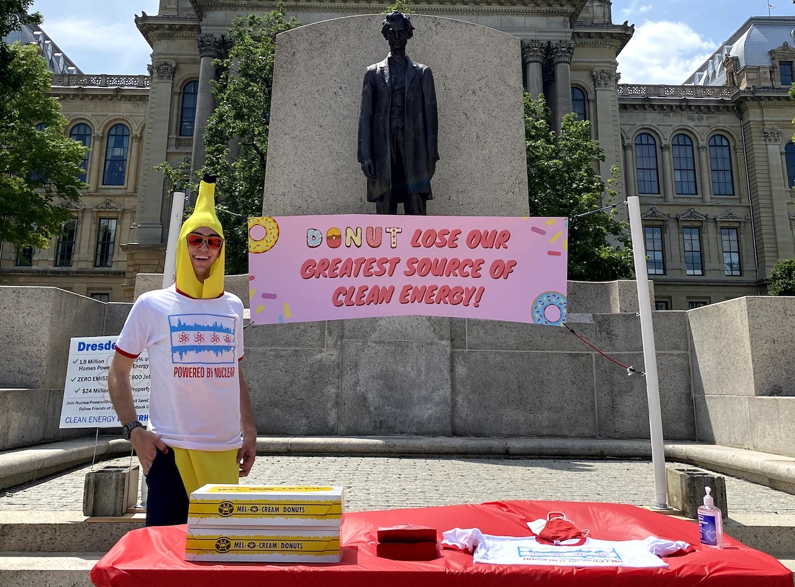

This blog is a dedicated space for me to share thoughts, ideas, experiences, and (most
importantly)
recipes!
Cooking has always been a big part of my life, but I promise these entries won't come
with egregious backstory. This space was inspired by my cousin Lauren, who gifted me an empty
cook
book that I traveled the country with until I ran out of pages. In an attempt to preserve those
recipes (and the memories they hold), I want to dedicate this place to storing them. I'm still
in the process of updating these, and adding the rest. Many of these
are my own creation; though some are inspired by meals I have eaten, or things I saw online.

Dive into the National American Nuclear Society Conferences

Navigating the Social Media Seas: Suggestions for American Nuclear Society Student Sections
Non-sweets
All of the non-sweets I recorded in my book, everything from breads, to sauces, to meals. Warning: I don't measure so these are guesses.
Starting from the back of my book, we have a mix of everyday desserts to the recipes
that I only break out for specific people.